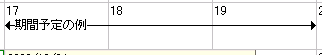
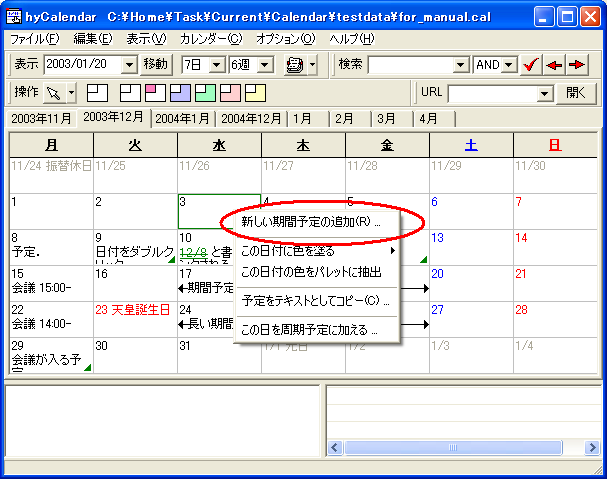
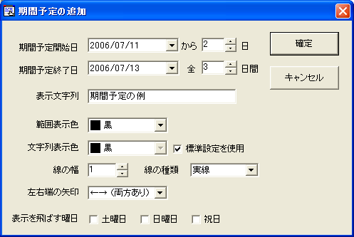
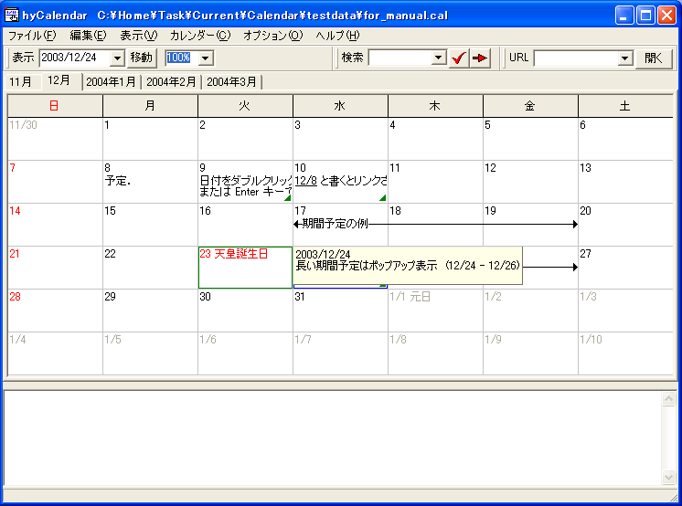
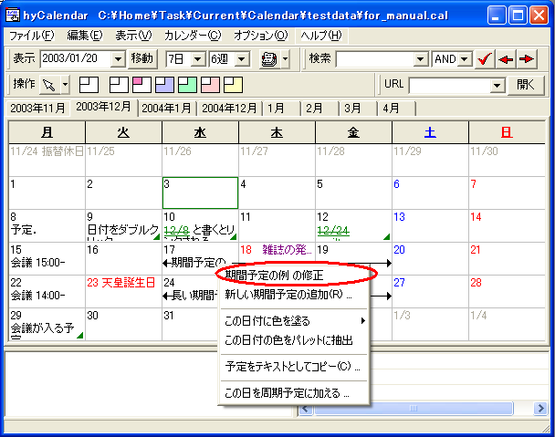

期間予定は，複数の連続した日にまたがる予定のことです． 矢印と直線を用いて，その区間を示します．
日付のセルを右クリックすると， コンテキストメニューが表示されます． 「新しい期間予定を追加」を選択すると， ダイアログが表示されます．
表示される以下のダイアログで，期間予定の項目を設定します．
| 予定開始日／終了日 | 期間予定が表示される範囲を設定します． 横に付属している 「開始日からＮ日」あるいは「全Ｎ日間」という 入力欄からでも設定が可能で， どちらによる入力を行った場合でも，開始日を基点に 終了日が再計算されます． |
| 表示文字列 | 直線上に表示される項目名です． 長すぎる場合は，日付の枠線の部分までで表示が切り落とされ， ポップアップ表示の対象となります． |
| 範囲表示色 | 区間に引かれる直線および 左右両端の矢印の色を指定します． |
| 文字列表示色 | 項目名の部分の色を変えたい場合に使用します． [標準設定を使用]を選択すると，期間予定のフォント の色がそのまま適用されます． |
| 線の幅，種類 | 区間を示す線の太さは 1〜5 の範囲で，また，点線や破線の種類を選択できます． 太い点線も利用可能です． |
| 左右端の矢印 | 左右両端の矢印のどちらか，あるいは両方を除去したい場合に，矢印のタイプを選択することができます． |
| 表示を飛ばす曜日 | 土日をまたがるような期間予定を土日祝日に期間予定を表示したくない場合， ここにチェックを付けると，表示上は土日などで期間を区切った形で表示することができます． これは表示上の扱いだけで，実際には予定は存在していますので， 編集や検索の対象にはなります． |
期間予定は，開始日付が早いもの，終了日付が早いもの，そしてキャプション文字列の 文字順番（開始アルファベットや番号の若い順）に自動配置されます．
長い期間予定を作成することは考慮していません． 期間予定の最大長は，3660日（約10年）に設定されています．
期間予定の文字列が長くてはみ出した場合も， 予定メモや日付名の場合と同様，ポップアップ表示されます．
作成した期間予定は，右クリックで表示される コンテキストメニューから「修正」を選ぶと， その予定に対する修正・削除，複製の作成を行うことができます． 「複製」ボタンを押した場合は，ダイアログは， 期間予定アイテムのすべての設定をコピーした状態の 新規作成ダイアログに変化します （複製ボタンを押下する前に変更した内容は， 新しいアイテムにしか影響を与えません）．
